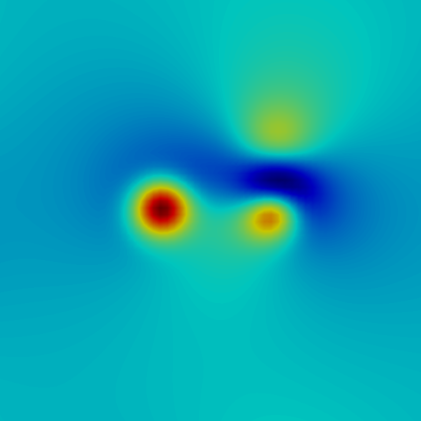
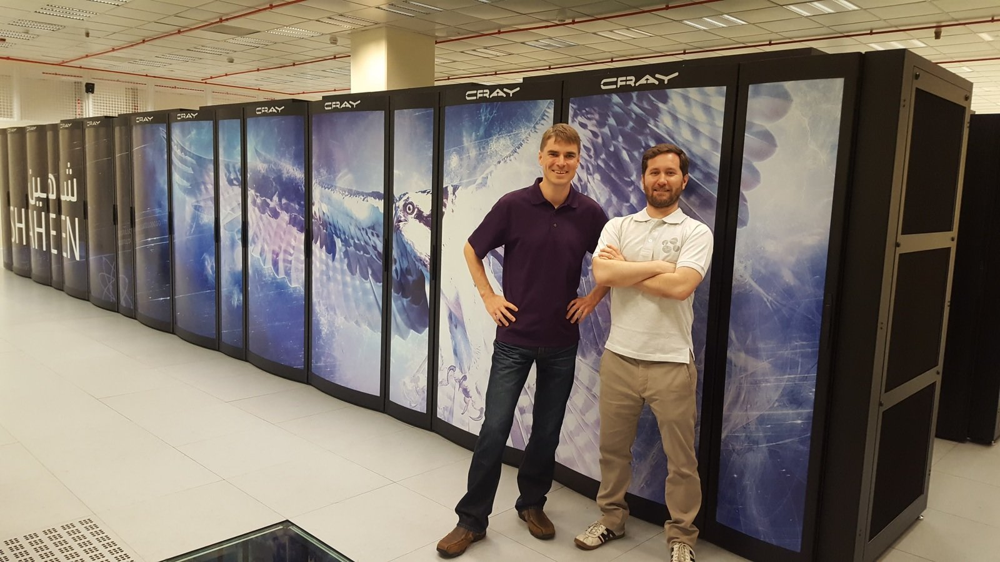

Velkommen til
MEK1100 - Feltteori og Vektoranalyse
Våren 2021
Foreleser: Mikael Mortensen (mikaem@math.uio.no)
Gruppelærere:
MEK1100 - litt praktisk informasjon
Mekanikk brukes om mye forskjellig
MEK1100 – Feltteori og vektoranalyse
Mekanikk i MEK1100
- Læren om bevegelse og om krefter som kan forårsake bevegelse
- Klassisk Newtonsk fysikk: $\boxed{m \vec{a} = \sum Krefter}$
- Kontinuumsmekanikk!
MEK1100 – Feltteori og vektoranalyse
I MEK1100 vil det være mye snakk om skalarfelt og vektorfelt
Fra P.C. Matthews kapittel 1:
- En skalar er noe som kun har størrelse og som dermed kan beskrives med ett tall
- En vektor er noe som har både størrelse og retning. En vektor i rommet er beskrevet av like mange tall som det er dimensjoner.
Fra P.C. Matthews kapittel 1:
- Et felt er noe (en fysisk mengde) som avhenger av posisjon
- Et skalarfelt er dermed noe hvis størrelse avhenger av posisjon
- Et vektorfelt er noe hvis størrelse og retning avhenger av posisjon
Skalarfelt
For eksempel:
- Temperatur
- Trykk
- Fart
- Nedbørsmengde

Konturplott for trykk
Vektorfelt
For eksempel:
- Hastighet på fluid
- Magnetfelt
- Elektrisk felt
- Gravitasjonsfelt

Konturplott trykk med hastighetsvektorer
Andre måter å presentere det samme

Konturlinjer av trykk med vektorer

Hevet konturplott for trykk med vektorer

Konturer av strømlinjer farget av trykk
I MEK1100 skal vi lære om
Fundamentale grunnstener for likningene som beskriver den synlige delen av naturen rundt oss
Modellering
- Hvordan bruke feltteori for å beskrive fluider
- Visulisering av felter (programmeringsverktøy)
- Data-analyse - I oblig 2 skal vi analysere data fra laboratoriet til fluidmekanikk seksjonen
- Demonstrasjonsforsøk
- Numerisk beregning av felt
Matematikk
En praktisk anvendelse av MAT1110
- Partielle deriverte og differensiallikninger
- Linje-, flate- og volumintegraler
- Gradienter av felter $\nabla \beta(x,y,z)$
- Divergens av felter $\nabla \cdot \vec{u}(x, y, z)$
- Kryss-produkter $\vec{a} \times \vec{b}$
- Virvling (curl) $\nabla \times \vec{u}$
For eksempel turbulens

Beskrevet av Navier-Stokes likningene
\[\begin{align*} \frac{\partial \vec{u}}{\partial t} + \nabla \cdot \vec{u} \vec{u} &= -\frac{1}{\rho}\nabla p + \nu \nabla^2 \vec{u} \\ \nabla \cdot \vec{u} &= 0 \end{align*} \]
\[
\begin{align*}
\color{green}{\frac{\partial \vec{u}}{\partial t}} + \color{magenta}{\nabla \cdot \vec{u} \vec{u}} &= -\frac{1}{\rho}\color{red}{\nabla p} + \color{gray}{\nu \nabla^2 \vec{u}} \\
\color{blue}{\nabla \cdot \vec{u}} &= 0
\end{align*}
\]
- $\color{green}{\frac{\partial \vec{u}}{\partial t}}\text{ - Partiell tidsderivert}$
- $\color{blue}{\nabla \cdot \vec{u}} \text{ - Divergens av vektor}$
- $\color{red}{\nabla p} \text{ - Gradient av skalar}$
- $\color{magenta}{\nabla \cdot \vec{u} \vec{u}}\text{ - Divergens av ytre produkt}$
$\text{mellom to vektorer}$ - $\color{gray}{\nu \nabla^2 \vec{u}\left(= \nu\nabla \cdot \nabla \vec{u} \right)}\text{ - Divergens av}$
$\text{gradient av vektor}$
Eller Rayleigh-Bénard konveksjon

Temperatur mellom to plater som holdes ved forskjellig temperatur
Navier Stokes + temperatur
\[\begin{align*} \frac{\partial \vec{u}}{\partial t} + \nabla \cdot \vec{u}\vec{u} &= -\frac{1}{\rho}\nabla p + \nu \nabla^2 \vec{u} + T \mathbf{k} \\ \nabla \cdot \vec{u} &= 0 \\ \frac{\partial T}{\partial t} + \vec{u}\cdot \nabla T &= \kappa \nabla^2 T \end{align*}\]For spesielt interesserte
Alle simuleringene over er gjort på supercomputere med Python-baserte koder
